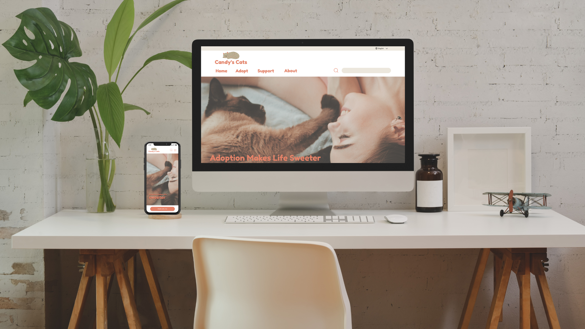
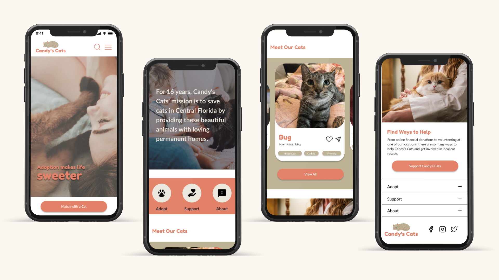

Candy’s Cats was created to save cats in Central Florida by connecting them to loving, permanent homes. We have observed that Candy’s Cats is not receiving enough donations to grow their organization to take in more cats. How might we improve our website’s navigation so that users can easily find where to donate and online donation sales increase?
Our organization, Candy’s Cats, is developing a new website in order to increase donations so we can rescue more cats and connect them with families in our community.
We created an interview plan that would help us identify pain points as the user accesses the website looking to adopt a cat, donate to the non-profit, or volunteer. Our interview candidates were individuals who identify as animal-lovers. We conducted website usability tests on the current Candy’s Cats website and evaluated how the user interacted - See our full interview testing plan.
We also created a Pet Adoption survey asking users about their preferred pet adoption method.

Additionally, we conducted our own evaluation of the website using a Heuristic Evaluation. We reviewed aesthetic, navigation, and ease of use. See our Heuristic Evaluation results.

Using our interview notes, we created an affinity diagram that allowed us to categorize common feedback. We derived 5 key takeaways.

After aggregating data from our user interviews, we created an empathy map for our proto persona, Jill. We discovered that Jill, a cat lover passionate about animal rights, needs an easy way to support cat adoption online so she can get cats into good homes and make a difference in her local community.

After creating an empathy map, we created a storyboard to visualize the user's journey and frustrations.

After understanding our users' current experiences, we created a feature prioritization matrix where we brainstormed features that would enhance the website. We ultimately decided on creating a Match with a Cat form and a Donation Page. See the user flows. Based on testing feedback, we also created a new navigation sitemap as users stated they wanted navigation to be condensed.

Designed by Abby
Designed by Mohammed
Designed by Billy
Designed by Candace
After conducting usability tests, we found 3 common themes with feedback. Users wanted to consistently see hero images on every page, they wanted the images and graphics to have rounded edges, and they wanted navigation arrows removed and images to slide.

Before we began creating high-fidelity prototypes, we created a UI Style Guide. Our style guide greatly helped our team achieve brand uniformity as we utilized the components feature in Figma.
As the website revolves around cats, we wanted to make the colors neutral but fun. We chose burnt orange as our primary color and used muted colors like olive, beige, and eggplant to complement it.
Once our UI Style Guide was complete and our components set up, each designer created their high-fidelity wireframes for desktop and mobile. After prototyping, we tested several users and iterated based on their desire for more whitespace around body copy, enlarging the mobile navigation icon, and creating more content blocks for readability. Below is our completed prototype.

From this redesign project, our team learned how organization and communication were imperative to effectively redesigning as a group. Agreeing to hold our designs loosely and accept all constructive feedback made iterating an easy, positive experience. We also learned the value of a UI Style Guide and components as this greatly helped streamline our design.
We’d love to continue our website redesign by building more pages, creating a user profile that stores the user’s cat vaccination records and vet visits, and creating the functionality where users can be alerted every time a new cat needs to be adopted.